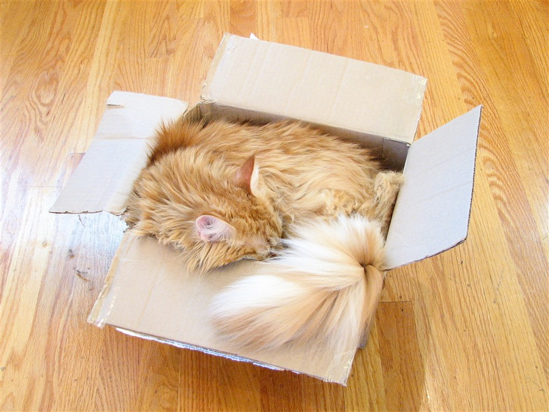
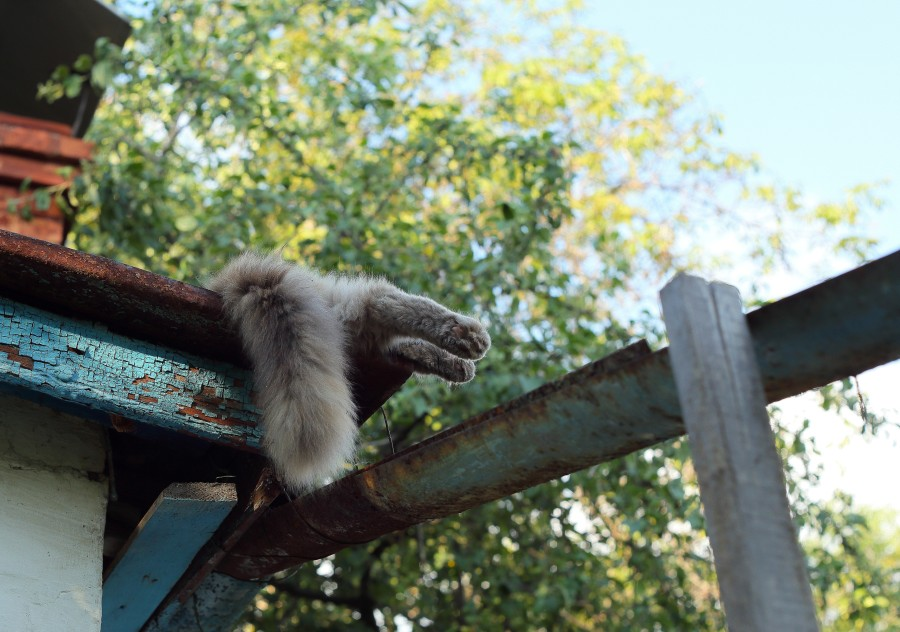

HOY EL DÍA ES TUYO
Feliz
cumpleaños.
Hoy cumple años mi hermana de otra madre, a la que más chocoaventuras le pasan 💜🐈
Tengo algo que decirteHay palabras bonitas. Y gatos. Obviamente.
chocoaventura 😭
se merece TODO ♡
Qué bonito que existas.
Hoy es un día para celebrarte y para que te sientas orgullosa de la persona que eres: amigable, sincera, divertida, la más random que he conocido y, además, una de las más leales. Tienes tantas cosas bonitas que podría quedarme un buen rato nombrándolas 💜
Solo me queda desearte todo lo bueno. Tú sabes lo que quieres y para dónde vas, y aunque a veces las cosas se pongan difíciles, siempre encuentras la manera de salir adelante. Con compañía o sin ella, has demostrado que puedes lograr muchísimo por ti misma, y eso dice mucho de ti.
No cambies esa personalidad tan linda que tienes, esa forma tan tuya de hablar con las personas, de hacer reír y de salir con algo que nadie se esperaba. Como mejor amiga, haces especiales hasta los momentos más simples. Gracias por las risas, por la confianza y por esa lealtad tan tuya. Me alegra mucho tenerte en mi vida 🫶
Y créeme que son muchas las personas que te quieren, aunque a veces sientas que estás sola. Yo soy una de ellas, y espero que nunca dudes de lo mucho que te quiero y de lo importante que eres para mí.
Sé que este año no fue el mejor y que hubo cosas que no fueron fáciles, pero fuiste encontrando la manera de seguir adelante. De verdad, eres una mujer muy fuerte, aunque también se vale cansarte y dejar que los que te queremos estemos ahí para ti.
Me llena de orgullo y felicidad ver la persona que eres y todo lo que vas logrando.
Quiero que la pases muy bonito en tu cumpleaños, que te rías mucho y que te sientas querida. Porque más allá de lo material, que va y viene, quedan los momentos que compartimos y las personas con las que los vivimos ✨
De aquí en adelante vienen más logros, más metas por cumplir y muchas cosas por vivir. Deseo de corazón que todo vaya tomando la forma que sueñas.
Feliz cumpleaños, mi brother.
Te quiero mucho 💜🎂
Mucho sentimiento.
Necesitábamos un gato.
Ahora también vienen con movimiento. Qué nivel.
Todavía falta algo… ↓02 / EL MISTERIO DEL SOBRE
Bueno…
¿y el sobre? 👀
Ese dinero tiene una misión.
Vamos a ver si la descubres.
- Pista 1
- Pista 2
- Pista 3


MISTERIO RESUELTO
Tu idea se vuelve tinta.
Ese dinero es para que te hagas el tatuaje de Michael Jackson que tanto quieres. Ese es mi regalo de cumpleaños 💜
Ahora sí: a volver esa idea tinta ✨
ESTE REGALO TIENE BANDA SONORA
Un poquito de Michael. 🕺
Porque esta sorpresa merecía su propia canción.
Escuchar Billie Jean ▶ Abre el video oficial en YouTube 🕺